Journal Week 44
Table of Contents
- Referencias
- 2026-10-26
- [08:40] Decisión: en el manuscrito van los datos crudos (sin desmezclar)
- [08:50] Nota: nivel de ruido de S1 (Día 1)
- [08:55] Nota: objeción “el corte y la caída de energía son rozamiento/disipación viscosa”
- [09:00] Pendiente: respuesta en frecuencia del sensor y sesgo de mojado
- [09:02] Extra: espectro espacial de la foto de 306 ms (video1.mp4, 24/08), ajuste csch²
- [09:03] Pendiente (a futuro): analizar el video completo y obtener relaciones de dispersión locales
- [09:13] Extra (sigue): foto de 306 ms — suavizado, normalización de Bonneton, frente y Cole-Hopf de pulso único
- [09:14] Pendiente (el usuario: “definitivamente vale la pena”): medir con la cámara bien de costado
- [09:45] Agua de la canilla (Primera/Segunda iteración) contra agua destilada (Tercera): qué cambia
- [10:03] Manuscrito, Figura 2: versión sin fondo, aprobada
- [10:22] Manuscrito, Figura 3: el forzado, aprobada
- [10:46] Ruido de los sensores: líneas de red y resonancias (JONSWAPBONNETON395)
- [10:46] Manuscrito, Figura 4: los tres sensores (en curso)
- [11:00] PDFs de η de la Fig. 4: ajustes de Tayfun (para discutir)
- 2026-10-27
- [16:50] Manuscrito, Figura 6: incerteza de la profundidad local (pendiente por definir)
- [16:50] Las olas de S3 que cruzan Miche no son artefactos del procesado
- [16:50] Pendiente por definir: cómo verificar la saturación H ∝ h después de la rotura
- [17:06] Manuscrito, Figura 7: PDF del número de Iribarren en S1 (en curso)
- [17:06] Búsqueda bibliográfica: ¿se puede redefinir ξ con la L local?
- [17:50] Medidas del agujero a rellenar en el escritorio nuevo
- [18:17] Excedencia de alturas (Fig. 8): ¿la falta de olas chicas es del método o física?
- [18:29] Búsqueda bibliográfica: ¿crestas o alturas? (Onorato, canales con pendiente, zona de rompientes)
- [18:33] Pendiente: revisar papers de Fauve sobre modelos de PDFs asimétricas de los incrementos
Referencias
2026-10-26
[08:40] Decisión: en el manuscrito van los datos crudos (sin desmezclar)
- Las matrices de acople ε del Día 2 (
Día 3/Resultados/dia2/acople/acople.json) quedan como referencia: S1 recibe 0,07–0,10 de S2 y ≲ 0,06 de S3; S2 recibe hasta 0,55 de S3. Para S1 el desmezclado no corre el pico y sube Hm0 un 5–9 %. Ver la entrada del 16/10 (week-42). - Para JONSWAPBONNETON395 (Día 1) no hay matriz calculada.
- Se usan los crudos; más adelante se independizan los sensores (cada uno con su PCB).
[08:50] Nota: nivel de ruido de S1 (Día 1)
- Reposo de Bonnetonbienprofundidad360 (t = 2–28 s): 0,050 mm rms en ventanas de 1 s (61 µm en las 26 s, por movimiento lento < 5 Hz).
- Piso espectral blanco ≈ 2×10⁻⁶ mm²/Hz (20–300 Hz), el mismo en el reposo y durante JONSWAPBONNETON395 (60–300 Hz: 2,1×10⁻⁶).
- rms del ruido: ≈ 50 µm en toda la banda (0–1000 Hz), ≈ 11 µm hasta 60 Hz, ≈ 7 µm hasta 20 Hz. Compatible con el σn ≲ 20 µm del ajuste RFPN del Día 4.
[08:55] Nota: objeción “el corte y la caída de energía son rozamiento/disipación viscosa”
- Estimaciones lineales en aguas someras (ν = 10⁻⁶ m²/s, h bajo S1 ≈ 0,73 cm, la del Día 2; la del Día 1 no está medida).
- Magnitud: capa de Stokes laminar en el fondo (RE = U²/(ων) ≈ 7×10³), γ = √(νω/2)/(2h): 0,12 s⁻¹ en ωm, 0,23 s⁻¹ en ων. De S3 a S1 (15 cm, ≈ 0,5 s) se pierde 12 % de la energía en ωm y 23 % en ων; en S1 se mide una pérdida de 64–80 %. El rozamiento explica como mucho ~1/6.
- Forma: el amortiguamiento viscoso va como √ω, es decir exp(−β√ω), suave. Entre 23 y 100 rad/s cambia ×1,3 (×2 en todo el recorrido desde la paleta); el csch² cae ≈ 1/800. La disipación de volumen (νk²) es despreciable cerca de ων (0,007 s⁻¹).
- Signo de ων(h) (el argumento más fuerte): un corte viscoso (2γ tviaje ≈ 1) da ωc ≈ 2gh³/(νL²), que crece como h³ (≈ 340 rad/s en S1). En el Día 2, ων ∝ h^−0,39 / h^−0,27 con ων√(h/g) ≈ 0,74: la escala de los frentes la fija la profundidad.
- La ν de ων no es la molecular: con ν molecular el choque tendría ~5 µm (decenas de µs). Para frentes de ~20 ms hace falta νef ≈ 10⁻³ m²/s (~1000× la del agua): es la viscosidad efectiva de la rotura. En el manuscrito escribir “effective (breaking) viscosity”.
- Coherente con Rankine–Hugoniot en la velocidad de los frentes y con la pérdida de ~5 % del pulso medio de S2 a S1 (Burgers).
- Puntos débiles: h bajo los sensores (con 0,5 cm las pérdidas suben ~50 %); una película superficial (posible suciedad del agua, 21/10) puede duplicar γ, pero sigue siendo ∝ √ω y con el signo opuesto en h; las paredes laterales aportan ~2h/b (falta medir el ancho b). Separar rotura y viscosidad punto por punto: cámara lateral (Redor et al. 2021).
[09:00] Pendiente: respuesta en frecuencia del sensor y sesgo de mojado
[ ]Sacudir el sensor sumergido con el motor (hasta ~80 Hz) en agua quieta para mostrar que no hay sesgo de mojado: que la asimetría de las PDF (Sk > 0, As < 0) sea del flujo y no del mojado residual del alambre.- Por qué importa: si la película de agua tarda en escurrir del alambre cuando el agua baja, el sensor lee alto en la bajada. Eso rellena los valles (Sk > 0 falso) y suaviza la parte de atrás de la ola (As < 0 falso): imita justo las firmas que medimos.
- Velocidades a cubrir: en S1 (JONSWAPBONNETON395), dη/dt llega a +94 / +163 mm/s (percentiles 99 / 99,9, subida de los frentes) y a −49 / −68 mm/s (1 / 0,1, bajada). Hay que llegar a ≳ 0,2 m/s. A 80 Hz eso es A ≈ 0,4 mm y ≈ 100 m/s² (~10 g); a 10 Hz, A ≈ 3 mm y ≈ 12 m/s². A confirmar si el LinMot lo banca con el sensor montado. (Propuesta mía.)
- Pruebas propuestas (mías, a discutir):
- Seno a 1–80 Hz: ganancia y fase contra f, y Sk/As del registro (≈ 0 si no hay sesgo); la bajada y la subida tienen que coincidir.
- Diente de sierra con subida rápida y bajada lenta, y al revés: el Sk medido tiene que cambiar de signo con el forzado. Un sesgo de mojado da el mismo signo en los dos casos.
- Comparar con la posición del encoder del motor y repetir con dos profundidades de inmersión.
[09:02] Extra: espectro espacial de la foto de 306 ms (video1.mp4, 24/08), ajuste csch²
- Perfil de la curva 8 del póster (
wave_curves.csv, 0,0313 cm/px), Sη(k) = |FFT(Hann · dη/dx)|²/k² (la derivada evita el salto entre bordes). Código:Día 6/Manuscrito/Códigos/espectro_espacial.py. - Velocidad del medio frente ≈ 58 cm/s, casi constante en los 9 cuadros. Ancho 10–90 % del frente: 3,1 cm (0 ms) → 0,84 cm (197 ms, el más empinado) → 2,2 cm (306 ms) → 3,6 cm (339 ms).
- Ajuste S = A csch²(k/kν) (la misma forma que el temporal, en log, sobre el perfil crudo): kν depende del rango, porque el espectro cae como k^−2,4 (más empinado que la asíntota k⁻²). A 306 ms: 1,5 ± 0,3 rad/cm (0,3–5) y 3,5 ± 0,7 rad/cm (0,3–10). En los 9 cuadros, kν sube mientras el frente se empina (máximo a 197 ms) y baja después de romper. Arriba de ~10 rad/cm domina la cuantización de 1 px.
- Comparación con el temporal (S1 de JONSWAPBONNETON395: ων = 23,0 rad/s; otro día y otra profundidad, así que es orientativa):
- ω = c kν del ajuste espectral: 90–210 rad/s, de 4 a 9 veces ων. El ajuste espectral de una foto lo dominan los subescalones del frente roto.
- Con el ancho total del frente (tanh: kν = 2/(πℓ), w10–90 = 2,2ℓ): kν = 0,64 rad/cm a 306 ms (37 rad/s) y 0,39 rad/cm a 339 ms (23 rad/s, igual a ων). El ων temporal corresponde al ancho del bore ya roto, no a su estructura fina.
- ν (choque de Burgers en aguas someras, ℓ = 8νh/(3cH), o sea ν = 3cH/(4πhkν)): espacial a 306 ms, 1,2–4×10⁻⁴ m²/s (h = 2,4–3,5 cm). Temporal en S1: νc de Bonneton = 4,5×10⁻⁴ m²/s, y con la misma fórmula del choque (ν = 3gH/(4πων), independiente de h) 6,5×10⁻⁴ m²/s con H = Hm0 = 6,4 mm. Mismo orden de magnitud (≈ 400 veces la viscosidad del agua).
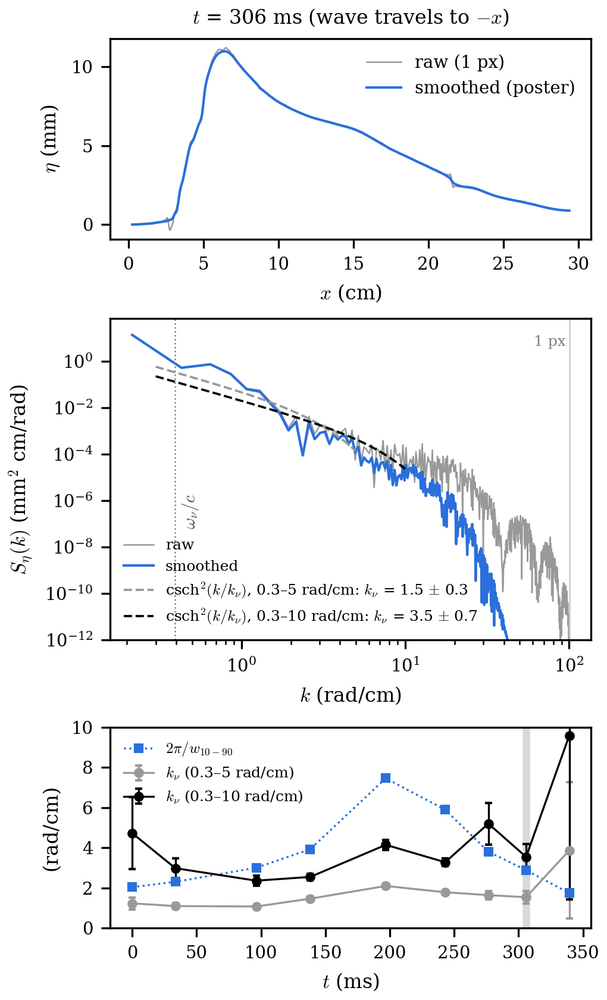
[09:03] Pendiente (a futuro): analizar el video completo y obtener relaciones de dispersión locales
[ ]Sacar η(x, t) de todo el video (no solo los 9 cuadros) y calcular relaciones de dispersión locales, tipo espectrograma (ventanas en x y en t, ω(k) en cada posición).- En shallow water deberían dar lineales, ω = √(gh(x)) k: la pendiente local da h(x) y, de ahí, estimar directamente la pendiente de la rampa.
- Idea del usuario. Encaja con la cámara lateral (Redor et al. 2021) y con la pendiente de medir H(x) y el punto de rotura.
[09:13] Extra (sigue): foto de 306 ms — suavizado, normalización de Bonneton, frente y Cole-Hopf de pulso único
- Estirar el ajuste sobre el suavizado (pregunta del usuario): kν se estabiliza en ≈ 4 rad/cm (0,3–20/30/40), pero eso lo fija el filtro del póster. El cociente suavizado/crudo cae a < 0,5 desde ~5 rad/cm (mediana de 11 px) y desde ~16 rad/cm sigue el gaussiano de σ = 2,5 px (35 rad/cm: 8×10⁻⁴ contra 7×10⁻⁴). Por encima de ~10 rad/cm esta foto no da información. Código:
espectro_espacial_suavizado.py.
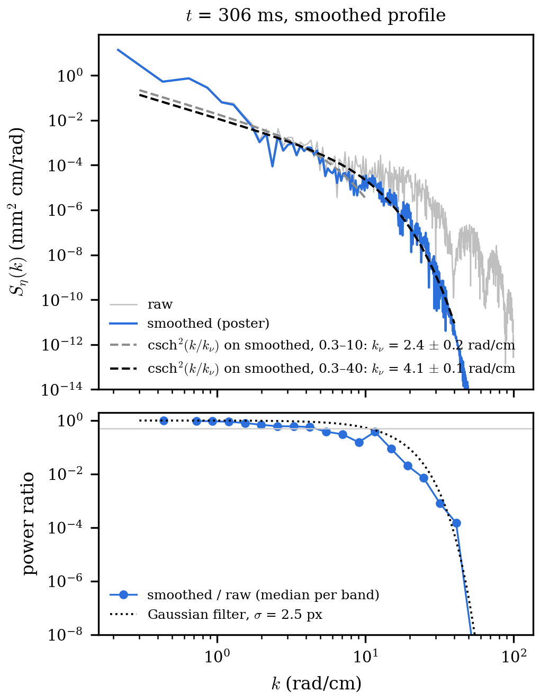
- Zoom del frente: no es un escalón suave sino una escalera de ~3 escalones (x ≈ 3,3, 4,2 y 5,0 cm; 2–4 mm de alto cada uno, unos pocos mm de ancho). Los tanh de los ajustes csch² (ℓ = 1,6–2,6 mm) tienen el ancho de cada escalón; el del ancho 10–90 % (ℓ ≈ 1 cm) sigue el frente completo. Código:
frente_espacial.py.
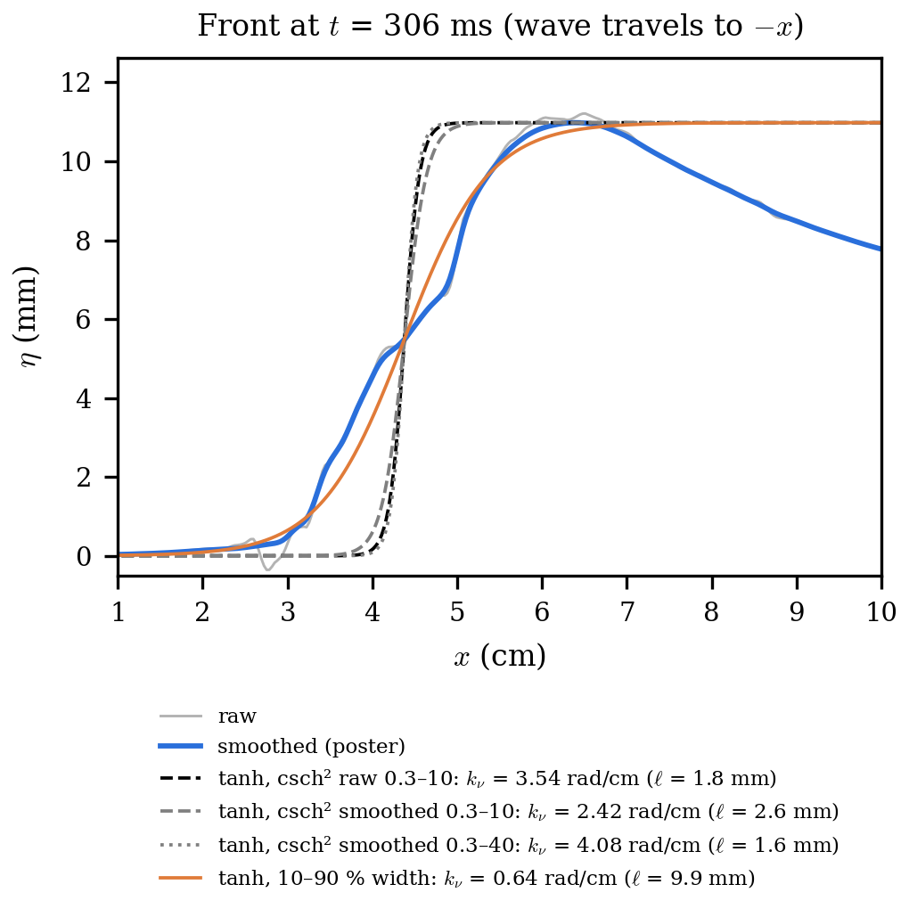
- Normalización de Bonneton (pedido del usuario: E/Ẽ con kν como único parámetro libre, el mismo tratamiento que las series temporales, sobre el suavizado). km = 2π/L = 0,22 rad/cm (un solo frente en la foto; ≈ ωm/c del JONSWAP, 0,25), borde inferior klo = 22/c = 0,38 rad/cm. Ajuste lineal (el de
ajuste_bonneton_auto.py): no anda en una foto, lo dominan los primeros bins (R² < 0). En log: kν = 1,84 ± 0,08 rad/cm en 0,38–10 (R² 0,81, ω = c kν ≈ 110 rad/s); 3,55 en 0,38–40 (R² 0,93, pero sigue al filtro). Sigue siendo 5–9 veces ων/c. Código:espectro_espacial_bonneton.py.
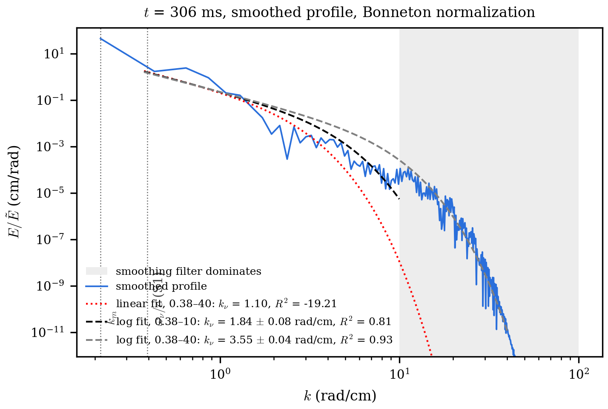
- Cole-Hopf de varios choques con un solo ν (
frente_colehopf.py): no queda determinado (con 3–4 choques ν tiene incerteza ≥ 100 % y aparecen saltos espurios). Descartado por ahora. - Cole-Hopf de un único pulso (pedido del usuario; la onda triangular del Día 2,
cole_hopf_pulso.py, con t → x y la rampa hacia +x): sobre el suavizado, R = 21 ± 0,5, W = 20,7 cm, VJ = 11,7 mm, R² = 0,988 (rms 0,35 mm). Sigue la rampa trasera, la cola y la subida del frente; no capta la escalera y queda ~1 mm bajo en el pico (la cresta se pasa respecto de Burgers, como en los Bonneton). Choque W/R = 10 mm (= el ℓ ≈ 9,9 mm del ancho 10–90 %), 17 ms con c = 58 cm/s. Código:pulso_colehopf.py.
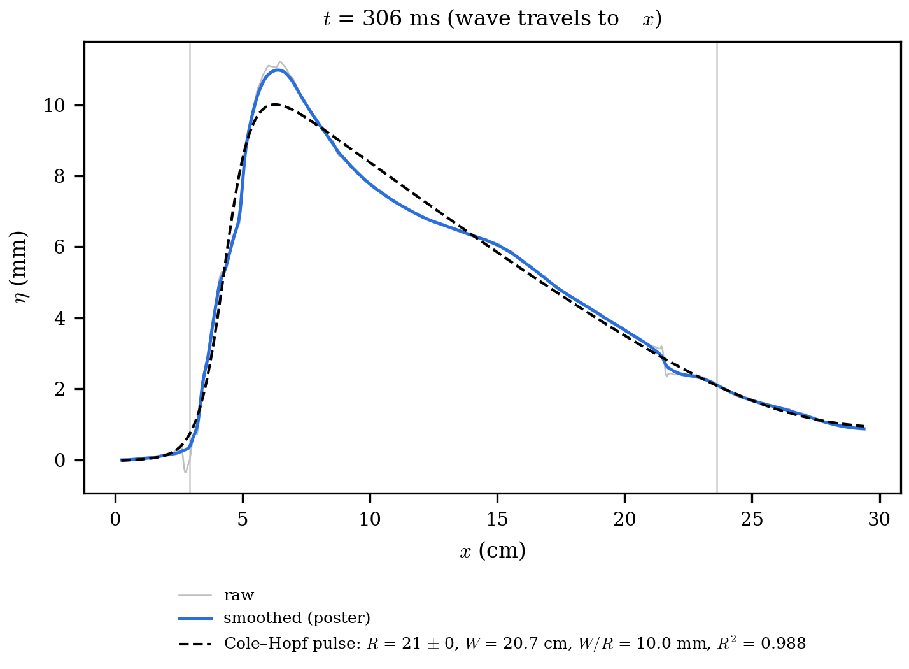
- ν con la misma fórmula en espacio y en tiempo (ν = 3cVJ W/(8hR), de R = A/(2ν) con v = (3c/2h)η): foto, 0,74–1,1×10⁻³ m²/s (h = 3,5–2,4 cm); temporal del Día 2 (S1, altura 8, pulso grande: R = 39, choque 26 ms, h = 0,35 cm, Wx = c Wt = 18,9 cm), 0,79×10⁻³ m²/s. Coinciden con montajes distintos: ≈ 1000 veces la del agua, la viscosidad efectiva de la rotura.
- Conclusión: el pulso de Cole-Hopf (perfil entero) mide la escala del bore, que es la de Burgers y la que ve el sensor; el csch² sobre una foto sola lo dominan los escalones internos de ~2 mm.
[09:14] Pendiente (el usuario: “definitivamente vale la pena”): medir con la cámara bien de costado
[ ]Filmar la ola bien de costado (montaje tipo Redor et al. 2021, entrada del 20/10) en la geometría del Día 1, con buena iluminación y escala en el plano de la ola.- Con eso: η(x, t) del video completo → Cole-Hopf de pulso y ν cuadro a cuadro durante la rotura, espectros espaciales promediados sobre muchos cuadros (¿el codo va a ~0,5 rad/cm, el ancho del bore?), dispersión local tipo espectrograma (pendiente de la rampa), punto de rotura y H(x) entre S2 y S1. Extraer el perfil con borde subpíxel y sin la mediana, para no depender del filtro del póster.
[09:45] Agua de la canilla (Primera/Segunda iteración) contra agua destilada (Tercera): qué cambia
Pregunta del usuario: cómo cambian estos números entre el agua de la canilla y la destilada. Los valores salen de entradas anteriores (week-42 y de hoy), salvo el ruido en altura de 10forzados, calculado hoy.
Magnitud Canilla Destilada Cambio ¿Es el agua? Sensibilidad (canales 1 y 2) ≈ 0,07 rad/cm (junio) 0,017–0,021 rad/cm 3,4× menor (1,4× en el 3) Sí: conductividad ~100× menor Piso de ruido de S1 en altura ≈ 4,3×10⁻⁶ mm²/Hz (≈ 65 µm rms) ≈ 2,1×10⁻⁶ mm²/Hz (≈ 47 µm rms) 1,4× mejor en amplitud Mixto (la fase mejoró 20×, la sensibilidad bajó) ων en S1 31,5 ± 0,7 rad/s (10forzados, 4,1 cm) ≈ 26–28 rad/s a 3,95–4,05 cm (Día 2) 15–20 % menor No separable del nivel y la posición RB (criterios de frente equivalentes) 136 / 61 110 / 57 Igual — νc (Bonneton, espectro) 2,8×10⁻⁴ m²/s (póster) 2,4–5,4×10⁻⁴ (Día 1); 4,5×10⁻⁴ (JONSWAP S1) Dentro del rango No detectable ν efectiva (Cole-Hopf de pulso único) 0,74–1,1×10⁻³ m²/s (foto del 24/08) 0,79×10⁻³ m²/s (Día 2, S1, altura 8) Igual No detectable - ων: en el Día 2 baja ~2 rad/s por mm de nivel cerca de 4 cm (27,7 → 23,1 entre 4,05 y 4,275 cm). Los 4–5 rad/s de diferencia equivalen a 2–3 mm de nivel, dentro de lo no controlado entre junio y octubre (inclinación de la cuba, rampa corrida ~1 cm, S1 dado vuelta, nivel leído con el menisco y en otro punto, otro forzado). Si fuera el agua, el candidato sería la tensión superficial o una película de surfactante, no la viscosidad.
- νc: la dispersión entre mediciones con la misma agua (×2) es mayor que cualquier diferencia entre aguas, porque νc = αν g^½ Hc3/2 (Bonneton, Ec. 5.4) depende de la altura en la rompiente. La comparación correcta sería αν. Con Hm0 de S1 como aproximación de Hc (7,6 contra 6,4 mm) daría αν ~2× mayor en la destilada, pero es demasiado grosero para tomarlo como resultado.
- La ν molecular difiere < 1 % entre las dos aguas (pesa más la temperatura, ≈ −2,5 %/°C) y es 300–1000 veces más chica que las ν de arriba: ν y νc son de la rotura.
- A confirmar: el Journal no dice qué agua tenía la cuba el 24/08 (supuse canilla; la destilada entró el 13/10).
[ ]Test limpio: cuando se filme de costado con agua de la canilla (decisión del 14/10), medir también con los sensores en el mismo llenado, recalibrar (la sensibilidad cambia 3,4×) y comparar αν = νc/(g^½ Hc3/2) con Hc medido en el video. Medir conductividad y temperatura.
[10:03] Manuscrito, Figura 2: versión sin fondo, aprobada
- (a) Cuadros sin el fondo: |cuadro − fondo| con el fondo de
backgrounder.py(promedio de los primeros 60 cuadros) alineado a cada cuadro. La bolsa, estática, se cancela sin tocar el agua (la limpieza anterior se comía el frente roto en 277–339 ms). El mapeo captura→video del póster tenía errores de ~2 % en escala y una cizalla (hasta 40 px): se refinó con ECC afín. Sin la línea detectada, rotada 1,05° (inclinación de la cámara) para que la línea de agua quede horizontal y recortada justo debajo de ella. Códigos:Día 6/Manuscrito/Códigos/quitar_fondo.pyyfig2_collage.py. - En el frente, la resta muestra un contorno 30–40 px por delante del perfil detectado (también tenue en las fotos originales): probablemente el frente sobre el vidrio del fondo, en perspectiva. A tener en cuenta con la cámara de costado.
- (b) Perfiles superpuestos rehechos con el estilo del manuscrito, sin α, H ni L (solo outer/inner surf zone):
fig2b_perfiles.py. - Aprobada por el usuario (“ahora sí, me gusta bastante más”). PDF: resumenfigurasmanuscrito.pdf (5 p.).
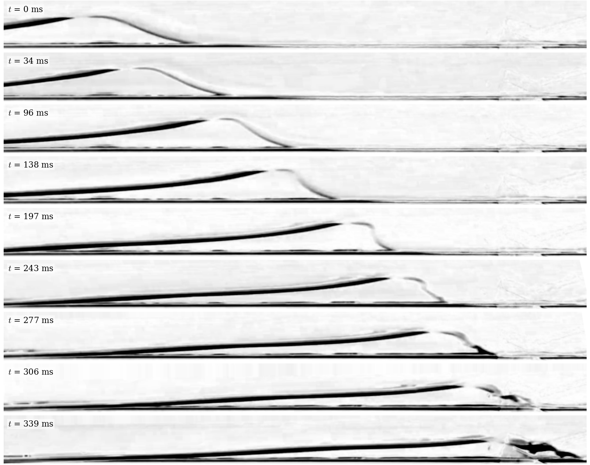
- Próximo: Figura 3.
[10:22] Manuscrito, Figura 3: el forzado, aprobada
- Medición principal: JONSWAPBONNETON395. (a) Posición de la paleta xp − ⟨xp⟩ (el CSV tal cual se le pasó al motor; ⟨xp⟩ ≈ 55 mm), ventana de 30 s por el centro de los 10 min. (b) Espectro S(f) en escala lineal (Welch con ventanas de Hann de 75 s, sin las rampas, solo dentro de la banda generada) con el objetivo JONSWAP en rayas, e inset log-log con la cola f^−5,6. Código:
Día 6/Manuscrito/Códigos/fig3_forzado.py. - La curva no es JONSWAP: el generador sintetiza η JONSWAP (γ = 3,3, Tp = 1,07 s, Hm0 = 42,9 mm, banda 0,5–3 fp; amplitudes determinísticas, fases al azar) y la divide por la transferencia de Biésel del pistón a h = 20 cm (de diseño). Por eso la cola de la paleta cae más rápido (la pendiente local va de −6 cerca del pico a −5 cerca del corte). Con 3,95 cm la η lineal en la paleta sería ≈ f^−3,3 con Hm0 ≈ 17,5 mm, y en S3 se midió Hm0 ≈ 5,3 mm: aclararlo en el texto.
- El serrucho del espectro era la estimación (Welch con 6 segmentos de 164 s sobre componentes con fases al azar), no la señal: con ventanas de 75 s queda liso.
- Reglas nuevas para las figuras (el usuario): frecuencias siempre en f, palabras con mayúscula inicial, unidades entre corchetes.
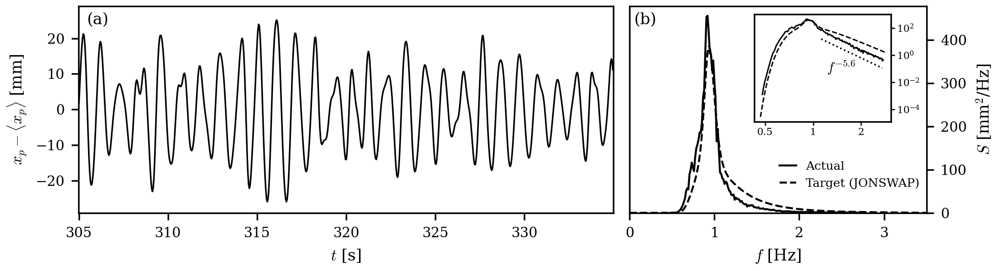
[10:46] Ruido de los sensores: líneas de red y resonancias (JONSWAPBONNETON395)
- Numeración nueva del manuscrito: S1 = canal 3 (paleta), S2 = canal 2, S3 = canal 1 (costa, el “S1” de antes).
- La serie del lock-in ya viene filtrada: pasabajos exponencial de dos etapas (−3 dB por etapa en 1 kHz) y recorte espectral a < 1 kHz (salida a 2 kHz). Sin el pasabajos de 20 Hz, las series se ven “peludas”, sobre todo S2.
- Espectros hasta 1 kHz (Welch de 20 s): las líneas de red son débiles (S1: nada; S2: 48,0 Hz, ancha, 35×; S3: 100, 200 y 300 Hz, 11–27×). Lo que domina son resonancias, probablemente mecánicas del alambre (idea del usuario): S2 tiene dos líneas angostas en 511,8 y 559,8 Hz (180× y 55× la mediana local) sobre jorobas de 10–20 Hz de ancho, que suman 135 µm rms (casi todo el ruido de S2); S3 tiene las mismas jorobas sin la línea, más otras en ~170, ~270, ~370 y ~670 Hz; S1 una en 26,2 Hz.
- Filtro (
Día 6/Manuscrito/Códigos/fig4_sensores.sacar_red): en la FFT de la serie completa, el módulo de cada banda se reemplaza por una interpolación lineal en el log del nivel rms de los bordes (la fase se conserva). Bandas: red 50k ± 1 Hz; líneas angostas > 10× la mediana en ±2 Hz (± 0,25 Hz); resonancias anchas > 3× la mediana en ±25 Hz del espectro suavizado (± 1 Hz). Primero interpolé con el promedio de log|X| y dejaba pozos (~−2,5 dB): se corrigió. - rms entre 20 Hz y 1 kHz: 33 → 30 (S1), 144 → 50 (S2), 57 → 50 µm (S3). σ, Sk y K cambian < 0,01. Quedan hombros chicos en los bordes de las jorobas anchas.
- Crudo (gris), filtrado (negro) y lo sacado (rojo):
Día 6/Manuscrito/Códigos/extra_red_espectros.py.
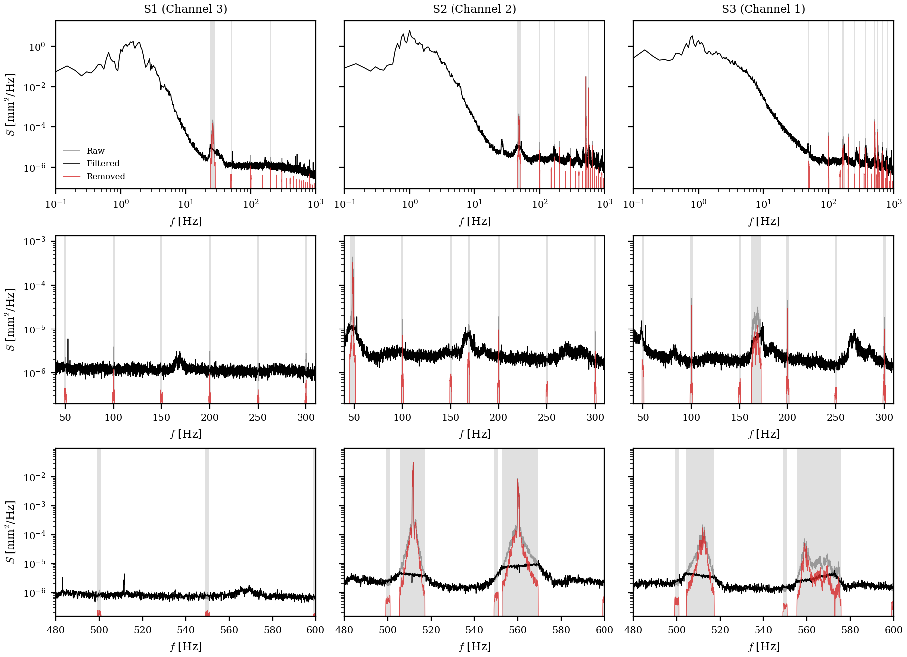
- Se aplica en la Fig. 4 del manuscrito (series y PDFs), con los pasos escritos en el PDF de figuras.
[10:46] Manuscrito, Figura 4: los tres sensores (en curso)
- (a)–(c) series de S1, S2 y S3 en 11 s desde t0 = 367,91 s (elegido con
Códigos/elegir_ventana.py), con recuadros que siguen a la ola más grande (S1 → S2: 0,47 s; S2 → S3: 0,93 s; en S3 es un diente de sierra). (d)–(f) PDF de η/σ con la gaussiana y una skew-normal con la misma Sk (sin ajuste): Sk = 0,17 / 0,38 / 0,59, K = 3,13 / 3,51 / 3,54. - Las crestas con z > 4 no caen en los bordes de bloque del lock-in: son olas reales (S1 en 183,05 y 282,73 s, que llegan a S2 0,5 s después). S3 concentra crestas extremas en 60–90 s (¿transitorio del arranque?).
- La forma estándar en la literatura de turbulencia de ondas para la PDF asimétrica es la de Tayfun (segundo orden): Falcon & Laroche (2011) la usan.
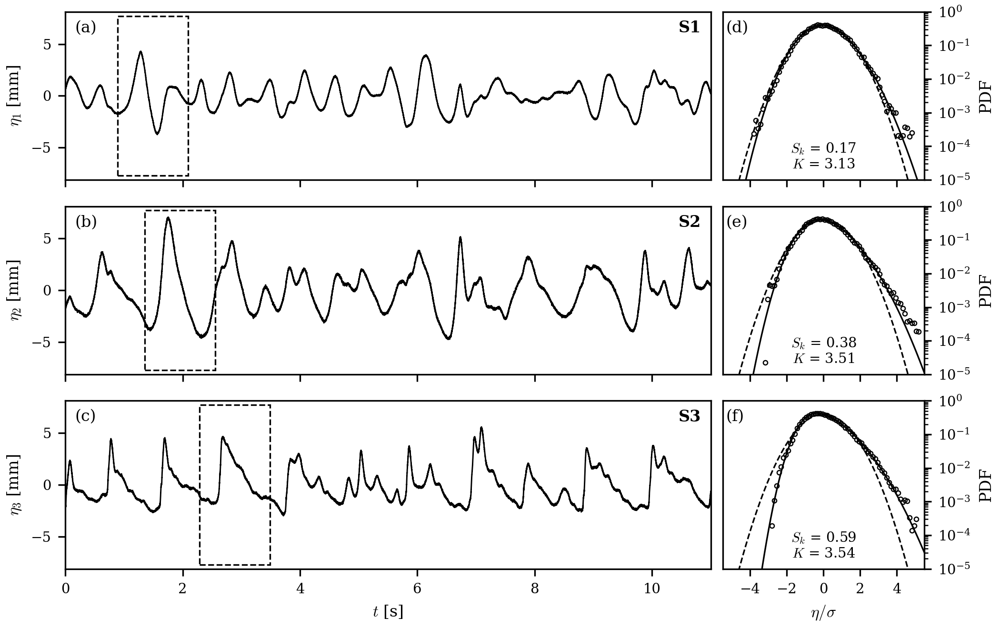
[11:00] PDFs de η de la Fig. 4: ajustes de Tayfun (para discutir)
Tayfun (1980), forma de Socquet-Juglard et al. (2005) (segundo orden, banda angosta: z = x + μx²/2, μ = kσ, Sk ≈ 3μ, valles acotados en z > −1/(2μ)); en turbulencia de ondas la usan Falcon & Laroche (2011). Ajuste de 3 parámetros por máxima verosimilitud sobre η/σ decimada ×10, series de la Fig. 4 (sin líneas ni resonancias). Comparado con la skew-normal ajustada y con la skew-normal sin ajuste (media 0, varianza 1, la Sk medida) que va en la figura. Código:
Día 6/Manuscrito/Códigos/tayfun_fig4.py(funciones copiadas del Día 3).Sensor Sk μ Tayfun 3μ KS gauss KS SN sin ajuste KS SN ajuste KS Tayfun P(η>3σ)×10³ medido / SN / Tayfun S1 0,18 0,054 0,16 0,014 0,002 0,002 0,003 2,4 / 2,7 / 2,4 S2 0,38 0,101 0,30 0,025 0,008 0,006 0,009 5,1 / 4,3 / 3,5 S3 0,59 0,172 0,51 0,043 0,004 0,003 0,009 6,2 / 6,0 / 5,2 - μ ≈ Sk/3 en los tres sensores (asimetría de segundo orden, como en el Día 3). Tayfun y la skew-normal ajustan el cuerpo igual de bien. En S2 los dos subestiman la cola de crestas. En S3 la cota inferior de Tayfun (−2,96σ) cae justo donde se cortan los valles medidos.
- Tabla completa (también con P(η < −2σ) y Δℓ) en el PDF de figuras, sección 4, recuadro “Para discutir”.
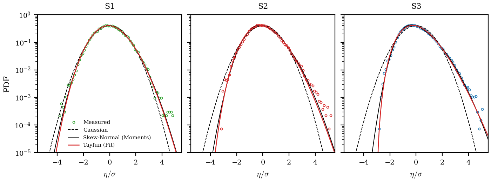
2026-10-27
[16:50] Manuscrito, Figura 6: incerteza de la profundidad local (pendiente por definir)
- Probamos una banda de Miche con la incerteza de la profundidad local d en la Fig. 6 (H/√m0 contra T/Tm): primero ±1 mm, después ±0,5 mm. Decisión del usuario: por ahora la figura va SOLO con la línea de Miche; la banda queda acá, como pendiente por definir.
- Ancho de la banda (±0,5 mm): S1 ±0,3 % (T ≈ 0,3 s, aguas casi profundas: tanh kd ≈ 1), S2 ±0,7 %, S3 ±4,9 % en la meseta (aguas someras: HMiche ≈ (2π/7) d ≈ 0,9 d). Solo se nota en S3.
- Olas de S3 por encima de Miche (d = 10,1 mm): 4 con d; 6 con d − 0,5 mm y 2 con d + 0,5 mm; con ±1 mm, 12 y 1.
- Pendiente por definir: el valor de la incerteza (±0,5 o ±1 mm) y si se incluye el setup (en la zona de rompientes η̄ ~ 0,1–0,2 H, ~0,5–1 mm en S3, del orden de la incerteza; se mide si la calibración ODR conserva el cero absoluto). Código:
Día 6/Manuscrito/Códigos/fig6_HT.py banda(fig6_HT.DD_MM).
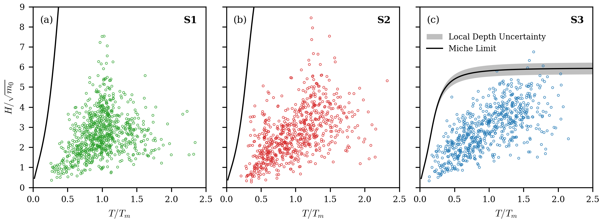
[16:50] Las olas de S3 que cruzan Miche no son artefactos del procesado
Controles sobre las 6 olas por encima de Miche con d − 0,5 mm (
Día 6/Manuscrito/Códigos/extra_outliers_miche.py):t [s] H [mm] T [s] H/HM Borde de bloque máx abs(Δη) / p99,9 D = 0,1 / 0,2 / 0,3 mm Pasabajos 20 Hz 130,86 9,23 1,32 1,08 10,9 s 1,2× 1,08 / 1,08 / 1,08 1,05 259,88 9,64 1,17 1,13 10,1 s 1,0× 1,13 / 1,13 / 1,13 1,10 267,40 8,63 1,51 1,01 2,6 s 1,2× 1,01 / 1,01 / 1,01 0,98 418,81 8,84 0,83 1,05 1,2 s (fuera) 1,2× 1,05 / 1,05 / 1,05 1,03 498,60 10,29 1,22 1,20 11,4 s 1,2× 1,20 / 1,20 / 1,20 1,19 522,87 9,06 1,16 1,06 12,9 s 1,0× 1,06 / 1,06 / 1,06 1,04 - Ninguna contiene un borde del lock-in, no hay picos, no cambian con la histéresis y el pasabajos de 20 Hz las baja 1–3 %. Son bores reales con H ≈ d: frente casi vertical y cola lineal de ~1 s, de olas que en S2 tenían 4–9 mm de cresta. Lo que sí es de la definición (cruces ascendentes, la de Tayfun): H junta la cresta del bore con el valle de su cola larga, y en 130,86 y 522,87 s entran dos crestas en la misma ola.
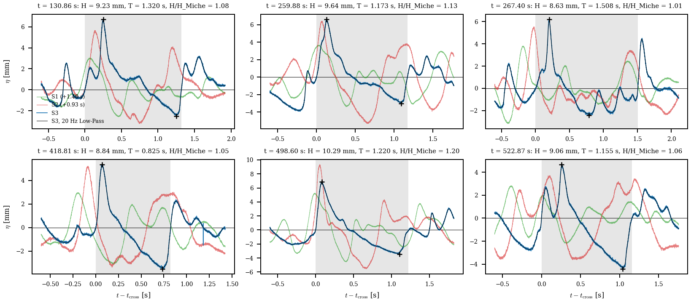
[16:50] Pendiente por definir: cómo verificar la saturación H ∝ h después de la rotura
- Después de la rotura, Miche en aguas someras es Hmax ≈ (2π/7) h ≈ 0,9 h: la saturación por profundidad (H = γh en la zona interna).
- H/d con las olas de la Fig. 6: Hrms/d = 0,09 (S1), 0,17 (S2) y 0,48 (S3); H1/3/d = 0,12 / 0,23 / 0,64; Hmax/d = 0,23 / 0,48 / 1,02. En S3, cerca del γrms ≈ 0,42 de Thornton & Guza (1983) (0,4–0,5 en laboratorio): indicio, no prueba (un solo punto).
- Formas de verificarla:
- Ola por ola en esta medición: HS3 contra HS2 (emparejadas por cresta con el retardo de la correlación): techo γh si satura.
- Barrido de nivel del Día 2 (
Custom_combinado_altura_1–8): Hrms y H1/10 en S3 contra h local, recta por el origen (a confirmar: posiciones de los sensores ese día). - A medir: varias amplitudes de forzado con el mismo nivel (HS3 fijo mientras HS1 crece), y el setup η̄ en cada sensor.
[17:06] Manuscrito, Figura 7: PDF del número de Iribarren en S1 (en curso)
- ξ = tan α / √(H/L) ola por ola en S1 (las 812 olas de la Fig. 6), tan α = 0,035, L de la relación de dispersión completa (gravito-capilar, d local = 42,5 mm; decisión del usuario). Estética del póster con el esquema de colores nuevo; sin porcentajes en la figura (van en el texto).
- PDF: 6 bloques consecutivos de 135–136 olas (todas), ⌊√135⌋ = 11 bins en [0,1027, 0,8], promedio de los 6 histogramas, error std/√6.
- ⟨ξ⟩ = 0,368, mediana 0,354; con el umbral 0,5: spilling 92 % (748 olas), plunging 8 % (64). Log-normal: σ = 0,233 ± 0,004, μ = −1,047 ± 0,006, A = 0,97 ± 0,03; χ²red = 3,2 (7 g.l.), R² = 0,994. El χ² viene de la cola (ξ = 0,52–0,71, ±2–3σ, con 6–34 olas por bin).
- Con el criterio de Battjes (L0 = gT²/2π): ⟨ξ0⟩ = 0,474, spilling 66 %.
- Código:
Día 6/Manuscrito/Códigos/fig7_iribarren.py(battjescomo argumento da la alternativa).
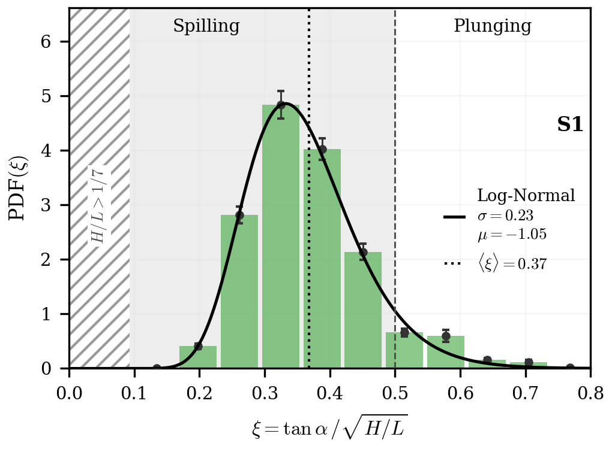
[17:06] Búsqueda bibliográfica: ¿se puede redefinir ξ con la L local?
- Todos los umbrales publicados usan L0 = gT²/2π, incluido ξb: Battjes (1974, p. 470) define ξb = tan α/√(Hb/L0) (umbrales 0,4 y 2,0), no con Lb, aunque fuentes secundarias (Coastal Wiki, Derakhti et al. 2020) se lo atribuyan con Lb.
- No hay umbrales calibrados para ξ con L local de profundidad finita ni con capilaridad (Battjes ignora la tensión superficial). La única recalibración con L local es para tsunamis (Roubos et al. 2021: < 0,27 / 0,27–0,54 / > 0,54). Moragues et al. (2020) usan L local en un plano (h/L, H/L) y encuentran que ξ no predice bien el tipo de rotura salvo spilling y plunging temprano.
- Con gravedad, L = L0 tanh kd → ξloc = ξ0 √(tanh kd): el umbral equivalente es 0,5 √(tanh kd), que depende de T ola por ola (≈ 0,40 en el pie, kd ≈ 0,75). La diferencia entre 92 y 66 % de spilling es solo el umbral.
- Práctica estándar con oleaje irregular (CIRIA Rock Manual 2007, EurOtop): ξ0 con L0 del período y H en el pie de la estructura. Otros umbrales con ξ0: Okazaki & Sunamura (1991): 0,5 / 2,5 / 3,7 (solo el abstract).
- No hay trabajos con la PDF de ξ por cruces por cero; lo más cercano: Goda (2010), Aggarwal et al. (2020, CFD, lognormal), Holand et al. (2023, rotura ola por ola sin ξ).
- Escala y capilaridad: Stagonas et al. (2011, la disipación a escala chica depende de la tensión superficial); Deike, Popinet & Melville (2015, JFM 769: límites spilling/plunging con (1+Bo)(−1/3), aguas profundas).
- Alternativas: S0 de Grilli et al. (1997), Derakhti et al. (2020, criterio de energía en la cresta en cualquier profundidad), Robertson et al. (2013, revisión).
- Referencias verificadas: Battjes 1974, doi:10.9753/icce.v14.26; Roubos et al. 2021, doi:10.48438/jchs.2021.0009; Moragues et al. 2020, doi:10.3390/jmse8040296; Goda 2010, doi:10.1142/S0578563410002129; Derakhti et al. 2020, doi:10.1029/2019JC015886; Grilli et al. 1997, doi:10.1061/(ASCE)0733-950X(1997)123:3(102); Stagonas et al. 2011, doi:10.1016/j.coastaleng.2011.05.009; Robertson et al. 2013, doi:10.1142/S0578563413500022.
- Por definir: ξ con L local sin clasificar (solo la PDF), o ξ0 para clasificar.
[17:50] Medidas del agujero a rellenar en el escritorio nuevo
- Diámetro interior: 66,2 mm.
- Alto: 32,58 mm.
[18:17] Excedencia de alturas (Fig. 8): ¿la falta de olas chicas es del método o física?
La excedencia medida queda cerca de 1 más tiempo que Rayleigh: hay menos olas chicas. Comparé tres detecciones de olas (
Día 6/Manuscrito/Códigos/extra_excedencia_metodo.py): histéresis ±0,2 mm (la de la Fig. 8), ±0,1 mm, y pasabajos de 20 Hz sin histéresis (como el Día 4).Sensor P(H > 2√m0): 0,2 / 0,1 / 20 Hz mediana H/√m0 P(H > 6√m0) Rayleigh 0,607 2,35 0,011 S1 0,702 / 0,672 / 0,617 2,55 / 2,48 / 2,35 0,011 – 0,0105 S2 0,687 / 0,585 / 0,603 2,56 / 2,25 / 2,33 0,014 – 0,016 S3 0,763 / 0,686 / 0,678 2,92 / 2,66 / 2,63 0,003 – 0,0045 - S1: es el método. La histéresis junta y saca las olas chicas; con el pasabajos de 20 Hz, S1 es Rayleigh en el cuerpo (mediana 2,35, igual que Rayleigh).
- S3: es físico. Con cualquier detección quedan menos olas chicas (mediana 2,63–2,92): después de romper, el tren de olas es más uniforme.
- Las colas casi no dependen del método. Con 0,1 mm aparecen olas de ruido de 1–3 ms en S2 y S3 (apoya los 0,2 mm).
- Por decidir: qué detección usar para la Fig. 8 (0,2 mm como las Figs. 5–7, o pasabajos de 20 Hz para el cuerpo).
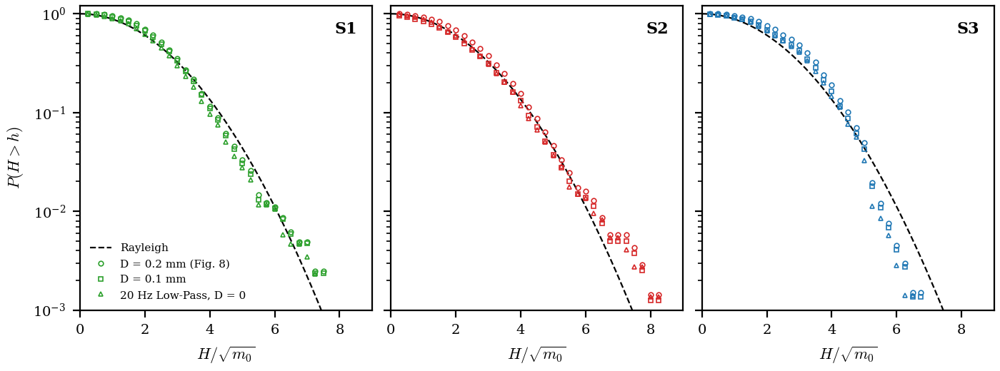
[18:29] Búsqueda bibliográfica: ¿crestas o alturas? (Onorato, canales con pendiente, zona de rompientes)
- Objetivo: mostrar que los resultados son compatibles con canales grandes; decidir qué excedencia va en la Fig. 8.
- Olas extremas (Onorato, Trulsen, Benoit): el diagnóstico estándar es Sk y K de η contra x. Encima, la excedencia de alturas (Rayleigh: Onorato 2004, 2006; Boccotti: Zhang & Benoit 2021) y, cuando el tema es la no linealidad, la de crestas (Tayfun / 2.º orden: Onorato, Osborne & Serio 2005, preprint). Onorato 2006 y 2009 muestran las dos.
- Pendiente o escalón: máximo de Sk y K (y de olas grandes) al final de la pendiente (Trulsen et al. 2012, 2020; Zhang et al. 2019; Kashima & Mori 2019). Coincide con nuestro S2 (cola de alturas por encima de Rayleigh justo antes de romper). Trulsen 2020: efecto solo si kp h < 1,3.
- Bolles, Speer & Moore 2019 (PRFluids 4, 011801): la geometría más parecida a la nuestra (canal de 6 m × 20 cm, escalón de 12,5 a 3 cm). Usan la PDF de η (gamma después del escalón), Sk y K contra x, y P(η > 4σ | η > 0), ×47–65 respecto de Gauss.
- Zona de rompientes (Kirby, Bonneton y sus datasets MK92, BK94): no muestran excedencias; Hs/Hrms, Sk y asimetría contra x (Kaihatu et al. 2007; Kirby & Kaihatu 1996). Mase & Kirby 1992 agrega crestas representativas contra h. Distribución de alturas en rompientes: Battjes & Groenendijk 2000 (Weibull compuesta, cola por debajo de Rayleigh por la profundidad), como nuestro S3.
- van Noorloos 2003 (el dataset vN03 de Bonneton): sin estadística ola por ola (ondas largas, espectros).
- Verificación: textos completos de Zhang & Benoit (preprint), Mase & Kirby 1992, Kirby & Kaihatu 1996, Kaihatu 2007, Bolles 2019 y Onorato 2006 (preprint); el resto, solo abstracts. Sin acceso al reporte BK94 ni a Katsardi et al. 2013.
- Propuesta: mostrar las dos (crestas con Tayfun, alturas con Rayleigh y Battjes–Groenendijk) y Sk, K contra x.
[18:33] Pendiente: revisar papers de Fauve sobre modelos de PDFs asimétricas de los incrementos
- Pedido del usuario: buscar en los trabajos de Fauve (y colaboradores) modelos para las PDFs asimétricas de los incrementos δη(τ) = η(t + τ) − η(t), para la parte de intermitencia y funciones de estructura (Sp, ζp).